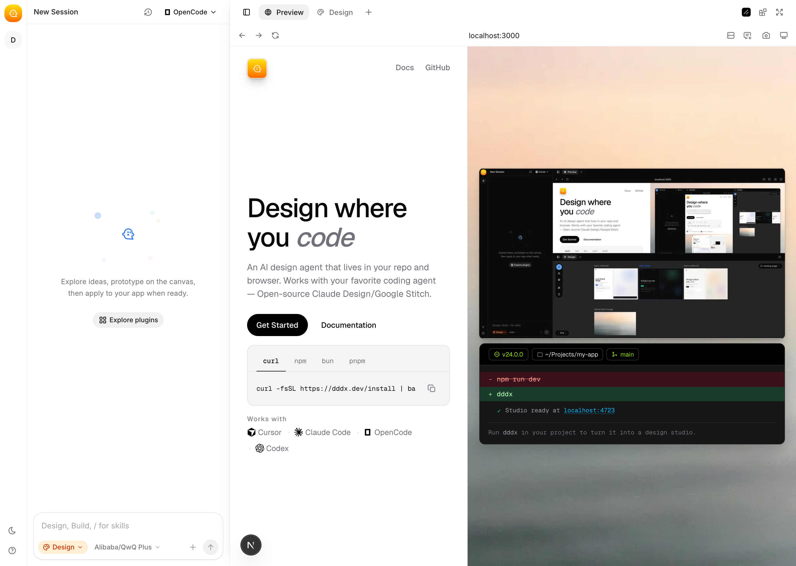
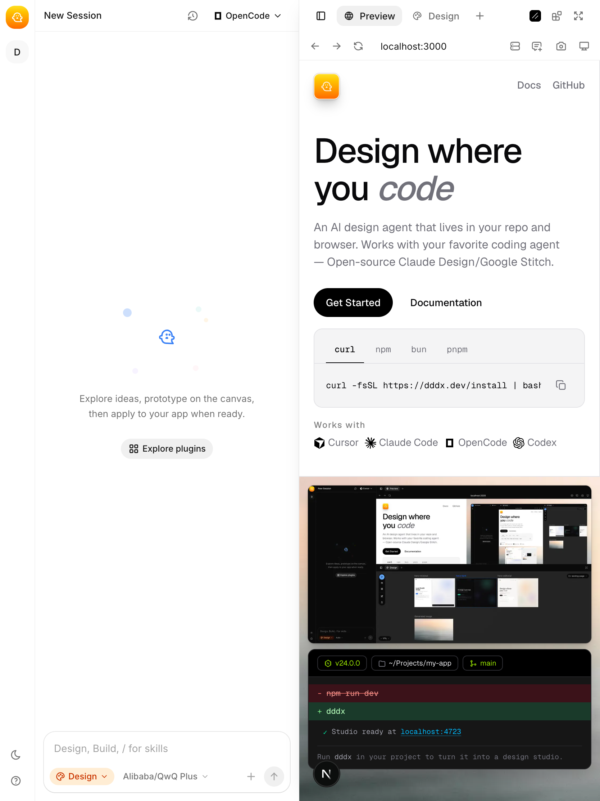

Public site
https://www.dddx.dev

Original marketing surface, captured before the redesign.
Now framed as Daisy Days: pastel garden surfaces, charcoal sticker outlines, and real source captures from public plus local DDDX.


The prototype now uses the requested localhost capture and the new cheerful frame language.